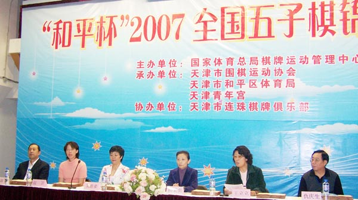
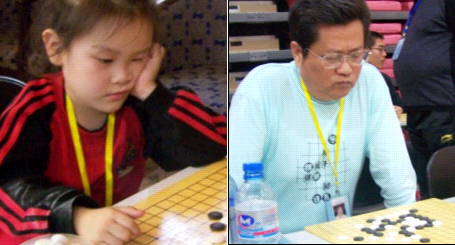
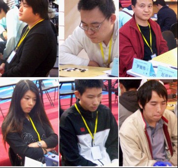
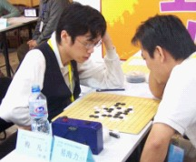
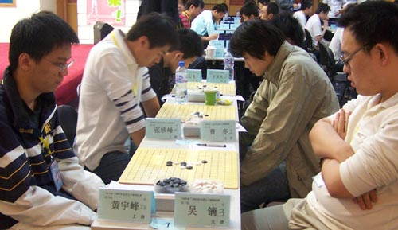
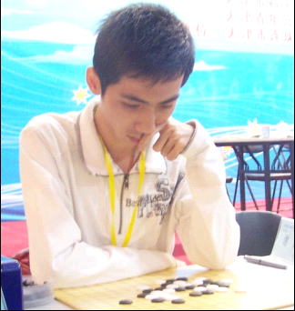
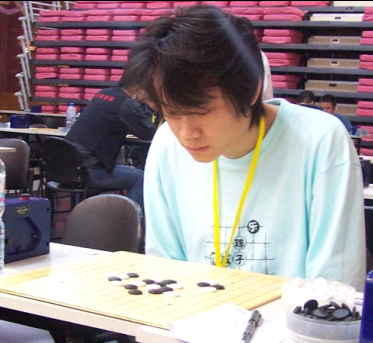
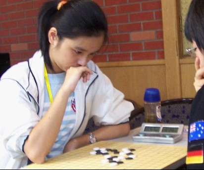
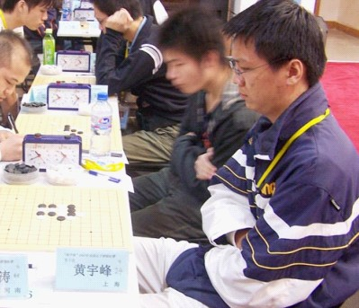
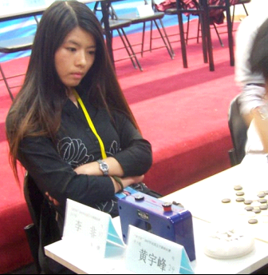

10月6日，由国家体育总局棋牌运动管理中心主办，天津市围棋运动协会、天津市和平区体育局、天津市青年宫联合承办的“和平杯”2007全国五子棋锦标赛在天津青年宫落下帏幕。这是中国棋院第六次举办全国性个人的五子棋赛事，目前北京、天津两地各承办了三届。

关键词：数据
共有来自全国二十几个地区和俱乐部的97名棋手参赛（男棋手87名，女棋手10名），是参赛人数最多的一届，其中广东和湖南、河南、陕西、裁决殿（网络社团）是第一次组队，还有香港籍棋手参赛。
年龄最大的棋手是北京的田汉法58岁，最小的5岁，秦皇岛快乐连珠俱乐部负责人杨春艳之女杨镒萌。


关键词：群英会
各路高手汇聚一堂，上届男子组冠军朱建锋，女子组冠军李非，世锦赛A组冠军吴镝六段，世锦赛无禁组冠军仇云飞五段，上海老将葛凌峰七段，中华连珠珠网名誉理事长罗锦伟，世青赛上一举成名快棋手段然，今年浙江赛的新科冠军梅凡。

关键词：难分难解
各路人马杀得狼烟四起，难分难解，竞争空前惨烈.直到第八轮赛完，除仇云飞意外告负退出争冠行列以外，上海代表队的黄宇峰，曹冬和吴镝都有冲击冠军的机会。最终男子组曹冬以半分小分的微弱优势捧杯。男子组3-12名的分别为黄宇峰、仇云飞、戴晓涵、葛凌峰、王昊天、朱建锋、李非、樊星辰、黄立勤、张轶峰。
女子组上海郑蔚楠和上届冠军北京张萌森均为5胜1负，不仅同积5分，连小分也相同，最后因累进分低3分的微弱劣势张萌森痛失桂冠。

关键词： 冷门
黄立勤，曾在广东rifchina分部联赛蝉连三届冠军，此次全锦赛黄立勤连连爆冷，第二轮战胜新科世锦赛A组冠军吴镝，第三轮又将上届全国赛冠军朱建峰擒于马下，6胜3负，最终积六分获列全锦赛第十一名。

关键词：曹冬
那威五子俱乐部棋手，中国最优秀的五子棋手之一，参加六届全国赛依次获得：第3名、13名、第5名，冠军、亚军以及本届冠军的优异成绩，是第一个在全国赛中夺得两次冠军的棋手。

关键词：郑蔚楠
郑蔚楠初段，上海围棋协会五子棋委员会(筹)首席翻译，第四届上海五子棋“新人王”大赛季军，是继顾婉卿之后的又一上海美女棋手，此次全国赛郑蔚楠一鸣惊人，战胜本组夺标大热门，第六届世青赛少年组季,上届全国赛女子少年组冠军张萌森，为上海夺得了第一个女子全国冠军。

关键词：黄宇峰
与此次参赛的众多知名棋手相比，作为上海第四代棋手的黄宇峰三段在“京沪擂台赛”之后，更加为国内棋迷所熟悉，尽管攻擂时黄宇峰在优势下走出误着负于曹冬，但他良好的中盘攻防技巧，还是给人们留下了深刻的印象。
这次全锦赛黄宇峰的对手分别是上届女子组冠军李非，上届男子组冠军朱建锋，以及本次夺冠大热门曹冬，同城兄弟樊星岑和知名老将葛凌峰，可谓个个久经沙场，身怀绝技。然而赛前不显山不露水的黄宇峰却一路过关斩将，直至最后一轮，惜败于吴镝。无论夺冠与否，此次黄宇峰的表现都堪称全锦赛的一大亮点。

关键词：李非
李非，天津优秀女棋手的代表人物，上届全国赛的女子冠军，参加本次男子组比赛唯一的一名女棋手，6胜1和2负，积6.5分，在参赛的87位男棋手中名列第9，李非用不俗的成绩证明自己是中国女子第一人。
附：
优秀组织奖名单
河南省棋牌院
上海市围棋协会五子棋委员会（筹）
湖南省棋类协会
天津市连珠棋牌俱乐部
那威五子棋俱乐部
河北妙手连珠五子棋俱乐部
秦皇岛快乐连珠俱乐部
广东聪韵棋院
体育道德风尚奖名单
田汉法 杜卫鹏隋云亮
盛宏安 崔炳鑫 徐嘉琦
&n